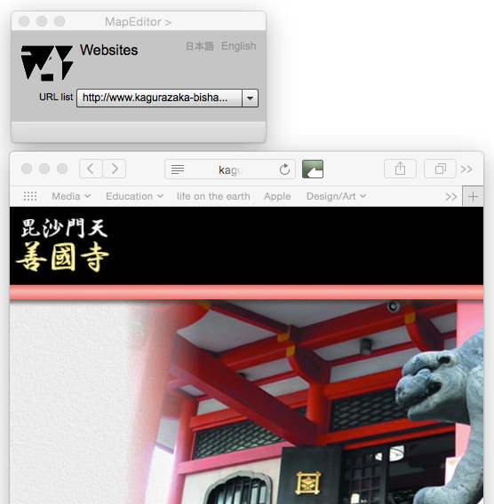

Website viewer
ウェブサイト表示
はじめに
このページは，地物のウェブサイト属性を表示するためにある．
Website viewer

図１．ウェブサイトビュアーと，表示されたサイト
FIELDS
URL List (選択可能）
地物が持つウェブサイトのURL属性を一覧から選択すると，ウェブサイトが表示される．
BUTTONS
日本語
今あなたが読んでいるドキュメントが表示されます．
English
You can read the tutorial written in English.